Correcciones pendientes de la web
Este documento sustituye a las listas por correo. Cada pantalla contiene un solo fallo, dónde está exactamente, cómo debe quedar y cómo lo comprobaremos. Entorno revisado el miércoles 30 de septiembre de 2026, a las 16:20.
- Bajad por el documento: cada pantalla es una corrección, numerada.
- En cada una tenéis la URL, la ruta del menú y la captura con el fallo marcado en rojo.
- Las capturas se pueden pulsar: se abren en una pestaña nueva a tamaño completo.
- Al terminarla, marcad la casilla «Hecho» y poned fecha y nombre.
- Cuando acabéis, pulsad «Copiar resumen para el correo» arriba y pegadlo en la respuesta.
Entorno de pruebas: endermar.digitalotzarreta.com · versión catalana en /ca/ · Endermar, Marketing y Comunicación.
Los enlaces del pie llevan a direcciones de la papelera
En el pie de todas las páginas, «Calidad» y los seis servicios apuntan a direcciones que contienen __trashed, que es como WordPress marca lo que está en la papelera. El visitante acaba en la página correcta porque hay un desvío automático, pero la dirección que se publica es la equivocada. En la versión en catalán, además, esos enlaces llevan a las páginas en castellano.
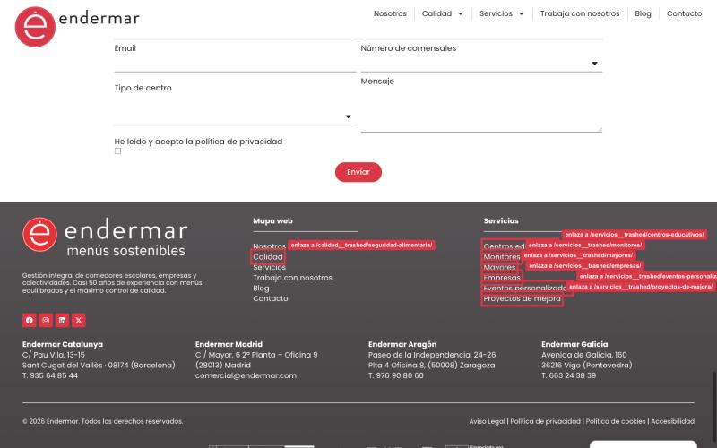
__trashed.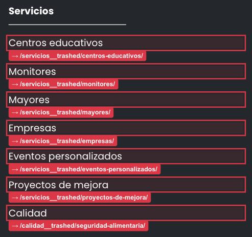
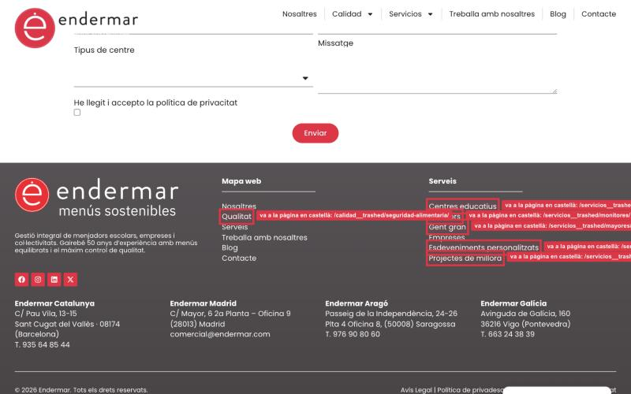
Dónde está
Pie de página, columnas «Mapa web» (enlace «Calidad») y «Servicios» (los seis enlaces).
Qué buscar
Pasad el ratón por encima de cada enlace y mirad si la dirección contiene __trashed.
Cómo queda bien
Ningún enlace del pie contiene __trashed, y en la versión catalana llevan a las páginas de /ca/.
Cómo lo comprobamos
Abrimos la home, bajamos al pie y pulsamos los siete enlaces mirando la barra de direcciones. Repetimos en /ca/.
La tarjeta de «Monitores Escolares» tiene el texto de Mayores
En el bloque «Nuestros servicios» de la portada, la tarjeta de Monitores Escolares muestra, palabra por palabra, la misma descripción que la tarjeta de Centro de Mayores, que está justo al lado. Esa tarjeta tampoco tiene fotografía: el hueco aparece en blanco. Os pasamos el texto correcto abajo, en castellano y en catalán.
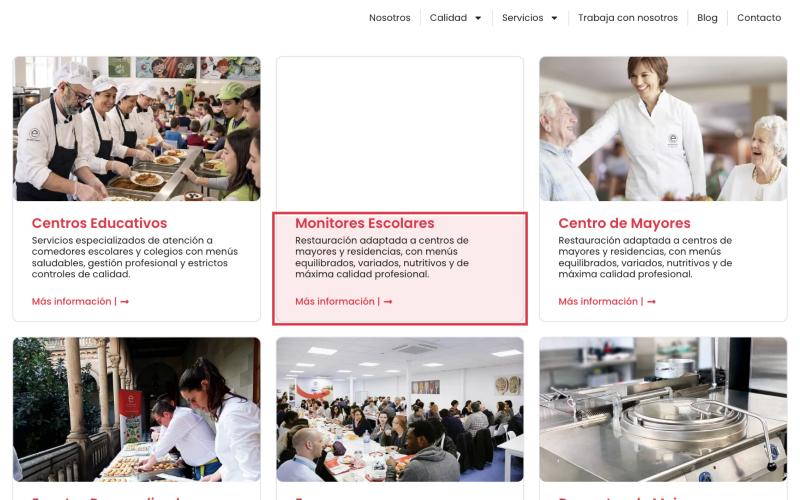
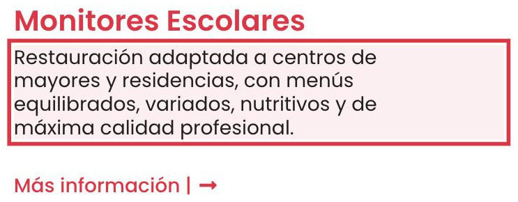
Qué buscar
En la tarjeta de Monitores, el texto Restauración adaptada a centros de mayores y residencias.
Texto correcto en castellano
«Monitores y directores de tiempo libre titulados que acompañan a los alumnos en el comedor, las acogidas y las actividades extraescolares.»
Texto correcto en catalán
«Monitors i directors de lleure titulats que acompanyen els alumnes al menjador, a les acollides i a les activitats extraescolars.»
Cómo queda bien
La tarjeta de Monitores tiene su propio texto y una fotografía, distintos de los de Mayores, en las dos versiones.
Cómo lo comprobamos
Abrimos la portada, bajamos a «Nuestros servicios» y leemos las tres primeras tarjetas. Repetimos en /ca/.
El formulario comercial pide «Adjuntar CV»
En las seis páginas de servicio, el formulario «¿Hablamos?» incluye un campo para adjuntar el currículum. Ese formulario es comercial: lo rellena un colegio o una empresa que pide presupuesto, no una persona que busca trabajo. El currículum solo debe pedirse en «Trabaja con nosotros». Este campo no estaba la semana pasada: ha aparecido al añadir la casilla de privacidad.
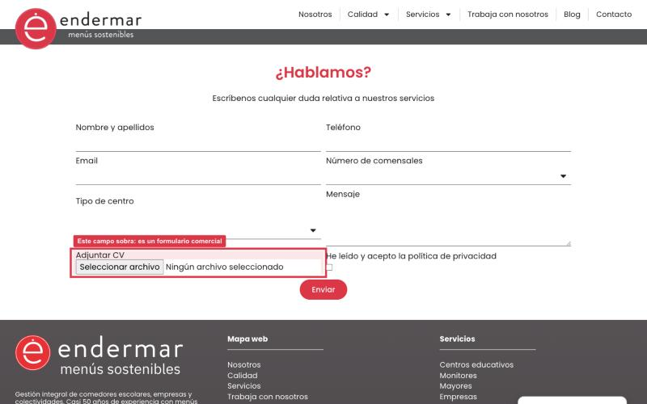
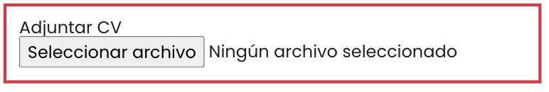
…/servicios/mayores/
…/servicios/empresas/
…/servicios/eventos-personalizados/
…/servicios/proyectos-de-mejora/
Qué buscar
En el formulario del final de la página, la etiqueta Adjuntar CV con su botón «Seleccionar archivo».
Cómo queda bien
El formulario de las seis páginas de servicio tiene seis campos —nombre, teléfono, email, número de comensales, tipo de centro y mensaje— más la casilla de privacidad. Ningún campo pide currículum.
Dónde sí debe estar
Solo en /trabaja-con-nosotros/, que es el formulario de candidaturas.
Cómo lo comprobamos
Abrimos las seis páginas de servicio, bajamos al formulario y contamos los campos. Y abrimos Trabaja con nosotros para ver que allí sí sigue.
Dos fotografías muestran caras de niños reconocibles
No podemos publicar imágenes en las que se reconozca la cara de un menor: hace falta el permiso por escrito de sus padres o tutores, y no lo tenemos. Quedan dos fotografías así. No vale con recortar: hay que sustituirlas o desenfocar las caras hasta que nadie pueda reconocer a nadie.
foto-Portada-proyecto-interactivo-1.jpg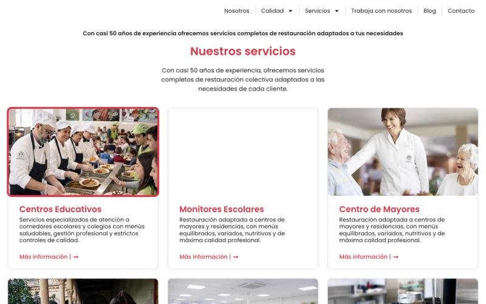
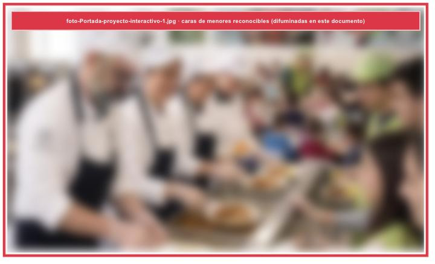
monit-3.jpg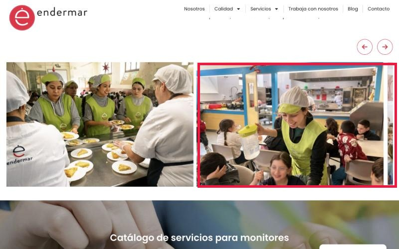
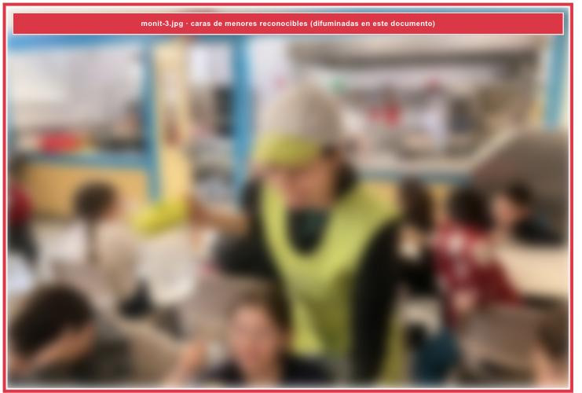
Cómo queda bien
En ninguna página de la web se puede reconocer la cara de un menor, ni leerse el nombre de un colegio en un uniforme.
Cómo lo comprobamos
Repasamos las dos páginas y, además, todas las fotos del sitio, una por una, antes de dar el visto bueno.
Si necesitáis recambio
Pedídnoslo y os pasamos fotos del banco de Endermar sin menores identificables.
La cabecera de Nutrición es una foto de catering de eventos
La página de Nutrición habla de menús escolares diseñados por dietistas, pero se abre con una mesa de aperitivos de un evento. La imagen no corresponde al servicio del que habla la página.
eventos-5.jpg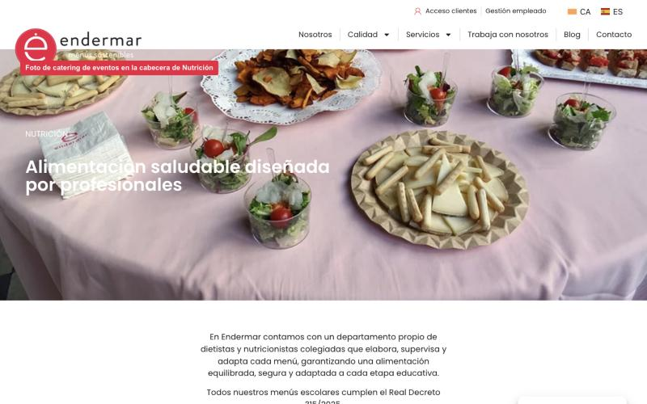
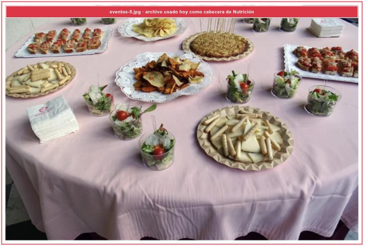
Cómo queda bien
La cabecera muestra un comedor escolar o el trabajo de las dietistas, y no aparece ninguna cara de menor reconocible.
Cómo lo comprobamos
Abrimos la página de Nutrición en castellano y en catalán y miramos la imagen de arriba.
Quién aporta la foto
Endermar. Os la enviamos con el resto del material.
Madrid aparece con el teléfono de Zaragoza
En la página de Contacto, bajo «También puedes llamarnos», el teléfono de Madrid es el mismo que el de Zaragoza, y además lleva un signo «+» suelto delante. Quien llame desde Madrid acabará en Zaragoza.
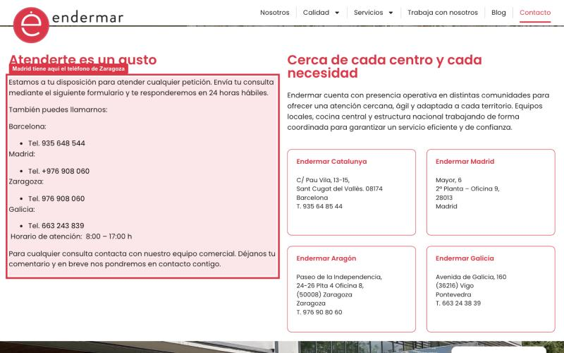
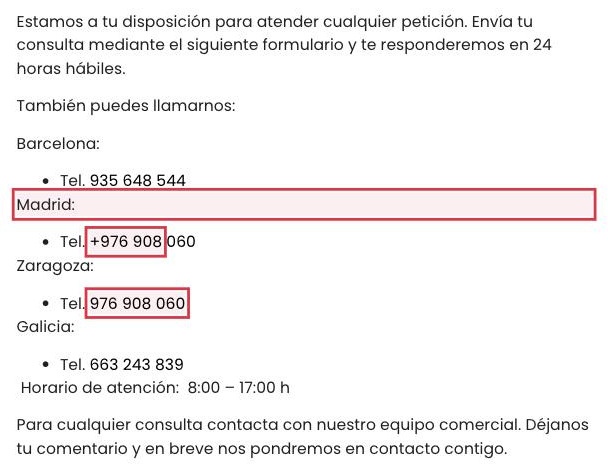
Qué buscar
La línea Madrid: Tel. +976 908 060.
Cómo queda bien
Madrid aparece sin teléfono, como en el pie, hasta que os confirmemos el número correcto. Y no queda ningún «+» suelto en los demás números.
Cómo lo comprobamos
Abrimos Contacto y leemos los cuatro teléfonos. Comprobamos que ninguno se repite entre delegaciones.
«Política de cookies» del pie lleva a una página vacía
En el pie, el enlace «Política de cookies» abre /politica-de-cookies/, que no tiene contenido: solo se ve la cabecera y el pie. La política buena, la que genera Complianz, está publicada en otra dirección: /politica-de-cookies-ue/. Hay que enlazar esa, o volcar su contenido en la primera y dejar una sola.
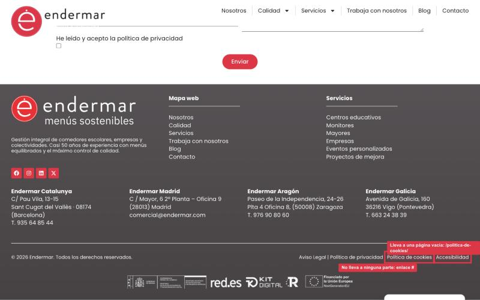
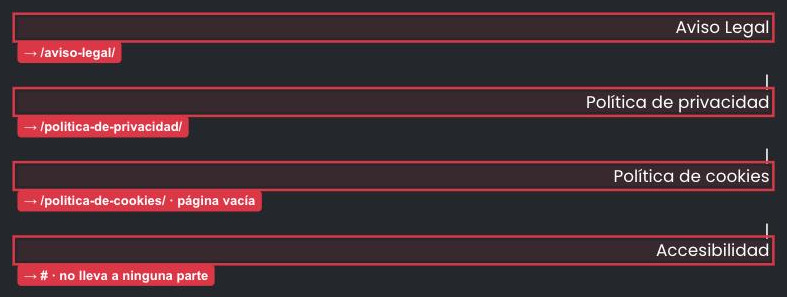
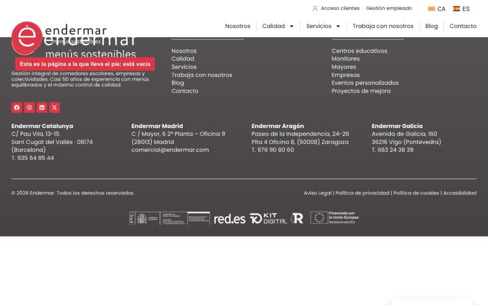
Cómo queda bien
Al pulsar «Política de cookies» en el pie se abre la política completa, la que genera Complianz, en castellano y en catalán. No queda ninguna página legal vacía en el sitio.
Cómo lo comprobamos
Pulsamos el enlace desde el pie y leemos que aparece el listado de cookies. Repetimos en /ca/.
Lo que aportamos nosotros
El aviso legal y la política de privacidad, que también están vacías. Os llegan con el material.
«Accesibilidad» no lleva a ninguna parte
El último enlace del pie, «Accesibilidad», está puesto como #, que en la web significa «no vayas a ningún sitio». Se pulsa y no pasa nada. O tiene página o no debe estar en el pie.
Qué buscar
El enlace «Accesibilidad», al final de la línea de enlaces legales.
Cómo queda bien
El enlace desaparece del pie, o abre una página de declaración de accesibilidad con contenido.
Decisión de Endermar
De momento, quitadlo. Si nuestro departamento jurídico nos dice que hace falta esa página, os lo diremos y os pasaremos el texto.
Cómo lo comprobamos
Miramos el pie: o no está, o al pulsarlo se abre una página con texto.
El menú en catalán tiene dos palabras en castellano
En la versión catalana, el menú de arriba está traducido salvo dos entradas: «Calidad» y «Servicios». Son las dos que despliegan submenú. La mayoría de nuestros clientes están en Cataluña y ese menú es lo primero que ven.
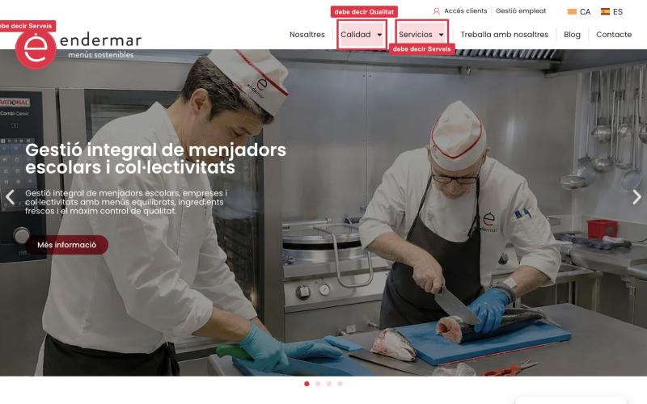
Qué buscar
Las palabras Calidad y Servicios dentro de cualquier página de /ca/.
Cómo queda bien
El menú catalán dice Qualitat y Serveis, arriba y en el pie.
Cómo lo comprobamos
Abrimos /ca/ y leemos el menú de arriba y el del pie.
El resto del catalán
Lo estamos revisando nosotros y os pasaremos las correcciones en un solo documento.
Las diapositivas 3 y 4 de la portada repiten la primera
El carrusel de la portada tiene cuatro diapositivas. La segunda habla del Real Decreto 315/2025. La tercera y la cuarta repiten, palabra por palabra, el texto de la primera, y sus botones «Más información» no llevan a ninguna parte. Os pasamos los textos definitivos con el resto del material.
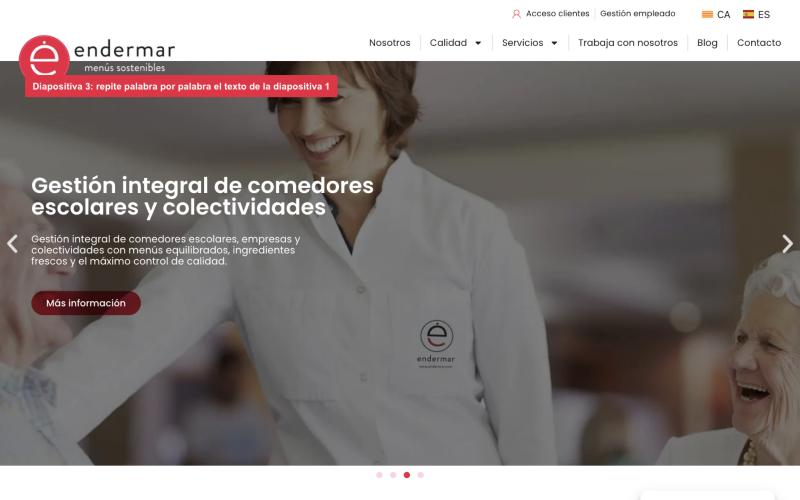
#Cómo queda bien
Cada diapositiva tiene su propio titular, su propio texto y un botón que lleva a una página real. Ninguna repite a otra.
Cómo lo comprobamos
Abrimos la portada, dejamos pasar las cuatro diapositivas y pulsamos cada botón.
Lo que aportamos nosotros
Los textos de las diapositivas 3 y 4, en castellano y en catalán, con el destino de cada botón.
Lo que depende de Endermar, no de vosotros
Estas cinco cosas siguen mal en la web, pero no son culpa vuestra: faltan materiales nuestros. Las ponemos aquí para que quede claro que no están en vuestra lista y para que sepáis qué llega y cuándo.
- Textos legales. El aviso legal y la política de privacidad están publicados pero vacíos. Los prepara nuestro departamento jurídico y os llegan con la razón social definitiva.
- Ofertas de empleo. Tres ofertas siguen situando el puesto en nuestra antigua central de Ripollet, que ya no existe. Recursos Humanos nos pasa el listado vigente.
- Menú del curso. El botón «Descargar el menú» de la página de Nutrición no lleva a ningún archivo. Os pasaremos el PDF del curso 2026-27, con los alérgenos de cada plato.
- Catálogos de servicios. Los botones de descarga siguen ocultos. Os diremos qué PDF va en cada página, o si retiramos los botones.
- Testimonios. Los que se ven ahora son de demostración. Estamos pidiendo autorización por escrito a tres clientes. Si no llegan a tiempo, publicaremos sin ese bloque.